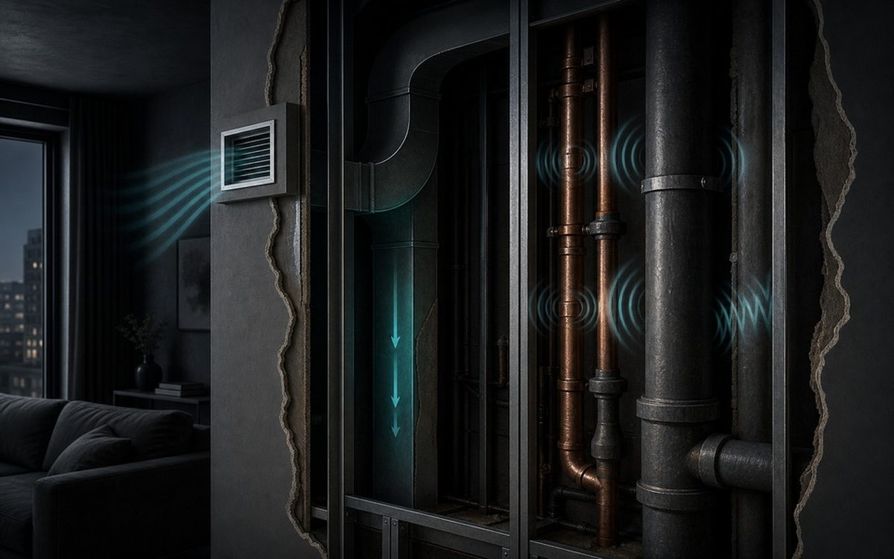

Шум вентиляции и труб
В спальне постоянный гул, а соседи, кажется, молчат. Или при сливе воды стена «стучит», хотя в ванной никого нет. Не весь шум в квартире — от людей за стеной. Часто виноваты воздуховод, стояк, вентилятор в шахте или лифт за перегородкой. Отличить их от «соседского» шума — первый шаг к правильному решению.

Откуда берётся инженерный шум
В квартире звук может идти не только через перегородки от соседей. Общедомовая вентиляция и шахты передают гул от вентиляторов и потока воздуха. Вентустановки и кондиционеры соседей дают вибрацию по трассам и креплениям. Стояки водоснабжения и канализации «стучат» при сливе — удар по трубе, который слышен в соседних комнатах. Лифтовое оборудование за стеной даёт ритмичный низкочастотный фон при движении кабины.
Здесь два механизма. Структурный шум — вибрация по жёстким креплениям труб, коробов, плит. Воздушный — звук, который летит по воздуховоду или просачивается через решётку и щели в коробе. Лечатся по-разному: то виброизоляция и облицовка шахты, то герметичный короб с правильной проходкой.
Ситуация
В спальне постоянный гул, соседи молчат. Над кроватью — вентиляционная решётка.
Что проверяет ЦИА
Проверка вентканала, состояние клапана, герметизация прохода. Иногда нужен проект короба с звукоизоляцией — без заклеивания решётки скотчем.
Почему это путают с шумом соседей
Оба варианта — «что-то гудит в стене или потолке». Но если заглушить стену звукоизоляцией, а источник в шахте — эффекта не будет. И наоборот: при разговорах соседей вентиляция ни при чём. Ведите журнал: когда слышно, что происходит в доме (лифт, слив, ветер). На акустическом замере инженер сопоставляет ваши записи с измерениями. Подробнее о диагностике — в статье шум от соседей: с чего начать.
Что можно сделать самому — осторожно
Осмотреть решётки, люки, короба — нет ли трещин, зазоров, вибрирующих крышек. Проверить, меняется ли шум при включении своей или общей вентиляции, при сливе воды, при работе лифта. Заклеивать решётку полностью нельзя — ухудшится вентиляция и может вырасти влажность. Нужен расчётный воздуховод, экран или короб — это уже инженерная задача.
Ремонт: когда закладывать решение
При капитальном ремонте — герметичные короба вокруг шахт, правильные проходки для труб с манжетами, виброизоляция креплений. Узлы закладывают на черновой, как и звукоизоляцию стен. Позднее — только локальные меры с ограничениями: облицовка доступной части шахты, замена решётки на модель с лучшим экраном, согласование с УК по общедомовым системам.
Кондиционеры и наружные блоки
Наружный блок на кронштейнах к стене передаёт вибрацию в конструкцию — особенно ночью. Важны тип крепления, виброподвесы, место установки относительно спальни. Трасса через стену — потенциальная щель; проходку герметизируют по проекту. Шум соседского кондиционера с улицы — отдельный разговор с соседом и, возможно, экранирование.
Стояки: удар при сливе
Пластиковая или металлическая труба при сливе воды ударяет о стенки и крепления — звук идёт по всему стояку. Решения: виброизоляция креплений, облицовка шахты с воздушным зазором, иногда замена жёстких хомутов на демпфирующие. Если стояк в общей нише со спальней — приоритет в проекте для квартиры.
Когда в зоне ответственности УК
Общедомовая вентиляция, изношенный лифт, аварийные стояки — часть инфраструктуры дома. При превышении норм по общедомовым системам заявка в управляющую компанию обоснована. Акустический проект в вашей квартире не заменит капитальный ремонт шахты, но помогает отделить: что исправить в квартире, а куда писать в УК. Щели и мостики в вашей зоне — см. акустические мостики.
Когда звать инженера
Если источник не ясен после простого наблюдения — обследование сэкономит месяцы догадок. Если планируется ремонт и шахта рядом со спальней — заложите короб в проект сразу. Не покупайте «звукоизоляцию для стены», пока не понятно, что стена — не единственный путь шума.
Журнал наблюдений: как вести
Записывайте: дата, время, что слышно, что происходило в доме. «Воскресенье, 3:00, ровный гул — лифт ездил» или «после слива у соседей сверху — стук в стене у ванной». Такой журнал на замере сопоставляют с измерениями — и часто источник становится очевидным. Без журнала легко потратить бюджет на усиление стены, когда шум шёл из вентиляционной шахты за ней.
Если ремонт впереди — передайте инженеру план квартиры с отметками решёток, люков, стояков и жалоб по комнатам. На черновой закладывают короба и проходки по проекту — это дешевле, чем латать после чистовой. Путаница с ударным шумом от соседей и гулом шахты — частая причина неверных решений.
Вентиляция и влажность
Любое решение по вентиляции должно сохранять приток и вытяжку. Заклеенная решётка даёт плесень и запах, а не тишину. Инженерный короб или экран рассчитывают так, чтобы снизить шум и не убить воздухообмен — это часть проекта при ремонте рядом со спальней.
Связанные темы
Шум из шахты часто смешивают с шумом от соседей — пути разные. Обход через щели — акустические мостики. Ударный шум по стояку — см. ударный шум с потолka. Звукоизоляция vs гул в комнате — отдельная тема.
Замер отделяет вентиляцию от соседского шума. Проект для квартиры включает узлы вокруг коробов. Дистанционная оценка — если ремонт ещё не начат. Этапы — когда подключать акустика.
Частые вопросы
Оставить заявку
Опишите помещение и задачу — подскажем формат работы ЦИА. Если вы прошли Проблемомер, поля заполнятся автоматически.
Задача отправлена